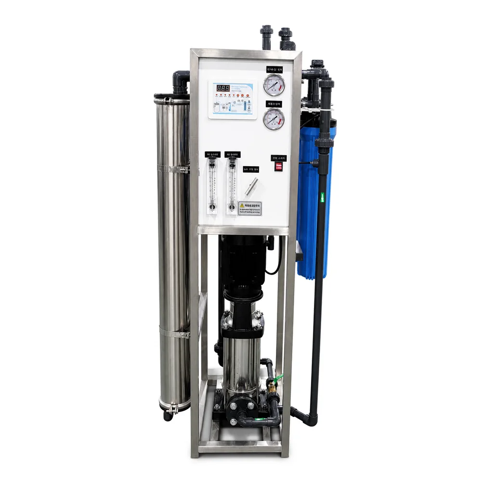

Mifumo ya viwandani ya RO na kuondoa chumvi kwenye maji ya bahari · #15 · 250-500 LPH
Thibitisha muunganisho na mahitaji ya mradi kabla ya kuomba bei.
Mifumo ya viwandani ya RO na kuondoa chumvi kwenye maji ya bahariThibitisha muunganisho na mahitaji ya mradi kabla ya kuomba bei.

Thibitisha muunganisho na mahitaji ya mradi kabla ya kuomba bei.
Mifumo ya viwandani ya RO na kuondoa chumvi kwenye maji ya bahariThibitisha muunganisho na mahitaji ya mradi kabla ya kuomba bei.
| Reference model and configuration | CT-0.5T standard configuration, 500 LPH RO plant |
|---|---|
| Nominal product-water capacity | 500 LPH standard reference configuration; 250 LPH available by project configuration |
| Reference feed TDS | 1000 ppm |
| Feed-water flow | ≥1.5 m3/h |
| Recommended recovery | ≥30%; actual recovery depends on feed water, temperature and operating conditions |
| Standard voltage | 220 V / 50 Hz / single phase |
| Optional voltage | 220 V / 60 Hz / single phase; 110 V / 60 Hz / single phase |
| Connections | DN20 feed-water inlet; DN15 permeate and concentrate outlets |
| Prefiltration | 2 x 20-inch blue filter housings |
| Filter cartridges | 1 x 20-inch 5 micron PP sediment cartridge + 1 x 20-inch CTO carbon cartridge |
| High-pressure pump | LEO EVPm2-11, coaxial type, 1 pc |
| Pump duty | Q 1.5 m3/h; H 105 m; 1.8 kW; 220 V / 50 Hz / single phase |
| RO membrane elements | 2 x Vontron 4040 membrane elements |
| Membrane housings | 2 x SUS304 4040 stainless steel membrane housings |
| Flow meters | 2 x 5 GPM panel-mounted rotameters |
| Flow control | 1 x SUS304 DN15 needle valve |
| Pressure gauges | 1 x 1 MPa gauge + 1 x 2.5 MPa gauge |
| Low-pressure switch | Adjustable range -0.5 to 3 bar |
| Solenoid valves | DN15 flushing solenoid valve + DN20 feed-water solenoid valve |
| Manual valve | DN15 brass shut-off valve |
| Controller | Mini RO controller with TDS and liquid-level display; 220 V / 50-60 Hz |
| Starter | Magnetic starter; 220 V / 50-60 Hz |
| Control cabinet | Mild-steel or stainless-steel option |
| Pipework | UPVC pipe and fittings, PN16 |
| Frame | Vertical SUS304 skid frame; caster-equipped mobile version available |
| Certification | CE certified; certificate copy available upon request |